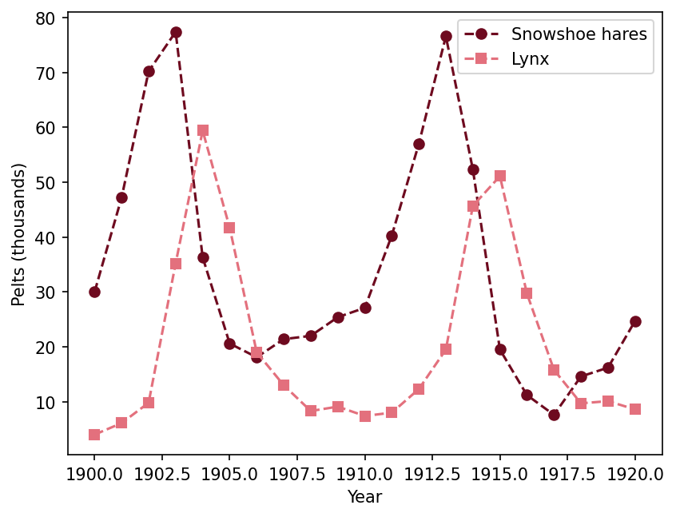
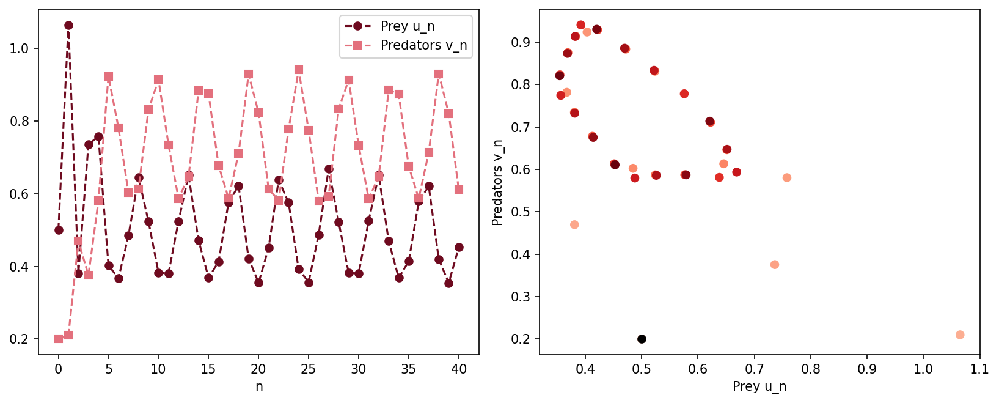
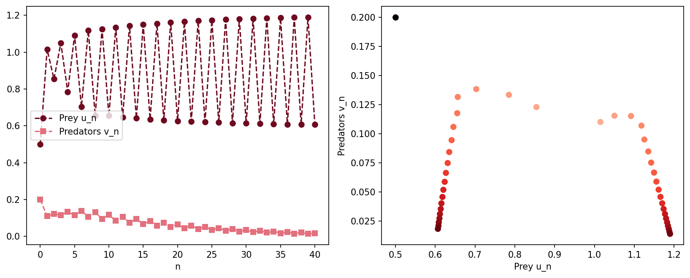

Chapter 2 · Discrete Dynamical Systems with Several Variables
2.1Examples: Fibonacci and Predator–Prey
Many processes can only be described with several quantities at once: young and adult pairs of rabbits, prey and predators. Each quantity gets its own recursion rule, and the rules depend on each other. This gives a system of difference equations.
For each figure of the section you will find the program that produces it. Change parameters and initial values and observe what happens. Figure and equation numbers refer to the book.
Fig. 2.2
Lynx and snowshoe hares
pelts in thousands, 1900–1920
The Hudson's Bay Company data show oscillations shifted against each other: the number of lynx peaks one to two years after the number of hares. The program determines the maxima for each decade.

# Fig. 2.2: Lynx and snowshoe hares (book, Section 2.1)
# number of pelts purchased by the Hudson's Bay Company (in thousands), 1900-1920, after Odum (1953)
# (c) 2026 Philipp Kügler · Program for the book "Dynamical Systems in the Life Sciences" · MIT License (see LICENSE)
using Printf, Plots, LinearAlgebra
jahr = 1900:1920
hasen = [30, 47.2, 70.2, 77.4, 36.3, 20.6, 18.1, 21.4, 22, 25.4, 27.1, 40.3, 57, 76.6, 52.3, 19.5, 11.2, 7.6, 14.6, 16.2, 24.7]
luchse = [4, 6.1, 9.8, 35.2, 59.4, 41.7, 19, 13, 8.3, 9.1, 7.4, 8, 12.3, 19.5, 45.7, 51.1, 29.7, 15.8, 9.7, 10.1, 8.6]
for (von, bis) in [(1900, 1909), (1910, 1920)] # maxima per decade: the lynx follow the hares
m = (jahr .>= von) .& (jahr .<= bis)
@printf("%d-%d: most hares %d, most lynx %d\n", von, bis, jahr[m][argmax(hasen[m])], jahr[m][argmax(luchse[m])])
end
p = plot(jahr, hasen, ls = :dash, marker = :circle, color = RGB(0.43, 0.04, 0.12), label = "Snowshoe hares",
xlabel = "Year", ylabel = "Pelts (thousands)")
plot!(p, jahr, luchse, ls = :dash, marker = :rect, color = RGB(0.89, 0.44, 0.49), label = "Lynx")
display(p)% Fig. 2.2: Lynx and snowshoe hares (book, Section 2.1)
% number of pelts purchased by the Hudson's Bay Company (in thousands), 1900-1920, after Odum (1953)
% (c) 2026 Philipp Kügler · Program for the book "Dynamical Systems in the Life Sciences" · MIT License (see LICENSE)
jahr = 1900:1920;
hasen = [30 47.2 70.2 77.4 36.3 20.6 18.1 21.4 22 25.4 27.1 40.3 57 76.6 52.3 19.5 11.2 7.6 14.6 16.2 24.7];
luchse = [4 6.1 9.8 35.2 59.4 41.7 19 13 8.3 9.1 7.4 8 12.3 19.5 45.7 51.1 29.7 15.8 9.7 10.1 8.6];
grenzen = [1900 1909; 1910 1920]; % maxima per decade: the lynx follow the hares
for i = 1:2
m = jahr >= grenzen(i, 1) & jahr <= grenzen(i, 2);
j = jahr(m);
[~, ih] = max(hasen(m)); [~, il] = max(luchse(m));
fprintf('%d-%d: most hares %d, most lynx %d\n', grenzen(i, 1), grenzen(i, 2), j(ih), j(il));
end
plot(jahr, hasen, '--o', 'Color', [0.43 0.04 0.12]); hold on
plot(jahr, luchse, '--s', 'Color', [0.89 0.44 0.49]); hold off
xlabel('Year'); ylabel('Pelts (thousands)'); legend('Snowshoe hares', 'Lynx');# Fig. 2.2: Lynx and snowshoe hares (book, Section 2.1)
# number of pelts purchased by the Hudson's Bay Company (in thousands), 1900-1920, after Odum (1953)
# (c) 2026 Philipp Kügler · Program for the book "Dynamical Systems in the Life Sciences" · MIT License (see LICENSE)
import numpy as np
import matplotlib.pyplot as plt
jahr = np.arange(1900, 1921)
hasen = [30, 47.2, 70.2, 77.4, 36.3, 20.6, 18.1, 21.4, 22, 25.4, 27.1, 40.3, 57, 76.6, 52.3, 19.5, 11.2, 7.6, 14.6, 16.2, 24.7]
luchse = [4, 6.1, 9.8, 35.2, 59.4, 41.7, 19, 13, 8.3, 9.1, 7.4, 8, 12.3, 19.5, 45.7, 51.1, 29.7, 15.8, 9.7, 10.1, 8.6]
for von, bis in [(1900, 1909), (1910, 1920)]: # maxima per decade: the lynx follow the hares
m = (jahr >= von) & (jahr <= bis)
print(f"{von}-{bis}: most hares {jahr[m][np.argmax(np.array(hasen)[m])]}, most lynx {jahr[m][np.argmax(np.array(luchse)[m])]}")
plt.plot(jahr, hasen, "o--", color=(0.43, 0.04, 0.12), label="Snowshoe hares")
plt.plot(jahr, luchse, "s--", color=(0.89, 0.44, 0.49), label="Lynx")
plt.xlabel("Year"); plt.ylabel("Pelts (thousands)"); plt.legend()
plt.show()# Fig. 2.2: Lynx and snowshoe hares (book, Section 2.1)
# number of pelts purchased by the Hudson's Bay Company (in thousands), 1900-1920, after Odum (1953)
# (c) 2026 Philipp Kügler · Program for the book "Dynamical Systems in the Life Sciences" · MIT License (see LICENSE)
jahr <- 1900:1920
hasen <- c(30, 47.2, 70.2, 77.4, 36.3, 20.6, 18.1, 21.4, 22, 25.4, 27.1, 40.3, 57, 76.6, 52.3, 19.5, 11.2, 7.6, 14.6, 16.2, 24.7)
luchse <- c(4, 6.1, 9.8, 35.2, 59.4, 41.7, 19, 13, 8.3, 9.1, 7.4, 8, 12.3, 19.5, 45.7, 51.1, 29.7, 15.8, 9.7, 10.1, 8.6)
for (g in list(c(1900, 1909), c(1910, 1920))) { # maxima per decade: the lynx follow the hares
m <- jahr >= g[1] & jahr <= g[2]
cat(sprintf("%d-%d: most hares %d, most lynx %d\n", g[1], g[2], jahr[m][which.max(hasen[m])], jahr[m][which.max(luchse[m])]))
}
plot(jahr, hasen, type = "o", lty = 2, pch = 16, col = rgb(0.43, 0.04, 0.12), ylim = c(0, 80), xlab = "Year", ylab = "Pelts (thousands)")
lines(jahr, luchse, type = "o", lty = 2, pch = 15, col = rgb(0.89, 0.44, 0.49))
legend("topright", legend = c("Snowshoe hares", "Lynx"), col = c(rgb(0.43, 0.04, 0.12), rgb(0.89, 0.44, 0.49)), pch = c(16, 15), lty = 2)Output in the command window
1900-1909: most hares 1903, most lynx 1904
1910-1920: most hares 1913, most lynx 1915Fig. 2.4
Predator–prey model: both survive
un+1 = (1 + r) un − r un2 − γ un vn, vn+1 = γ un vn
With r = 3.1 and γ = 2.1, prey and predators oscillate with a shift, as in the pelt data. In the phase plane (right) the states circle around the steady state (1/γ, r(1 − 1/γ)/γ).

# Fig. 2.4: Predator-prey model, predators and prey survive (book, Section 2.1, Eq. 2.3)
# u_{n+1} = (1 + r) u_n - r u_n^2 - gamma u_n v_n, v_{n+1} = gamma u_n v_n with r = 3.1, gamma = 2.1, u_0 = 0.5, v_0 = 0.2
# (c) 2026 Philipp Kügler · Program for the book "Dynamical Systems in the Life Sciences" · MIT License (see LICENSE)
using Printf, Plots, LinearAlgebra
r = 3.1; gamma = 2.1
N = 40
u = zeros(N + 1); v = zeros(N + 1)
u[1] = 0.5; v[1] = 0.2 # Julia counts from 1: u[1] is u_0
for k in 1:N
u[k + 1] = (1 + r) * u[k] - r * u[k]^2 - gamma * u[k] * v[k]
v[k + 1] = gamma * u[k] * v[k]
end
@printf("steady state (1/gamma, r(1 - 1/gamma)/gamma) = (%.4f, %.4f)\n", 1/gamma, r * (1 - 1/gamma) / gamma)
println("u_36 ... u_40 = ", join([@sprintf("%.3f", x) for x in u[37:41]], " "))
n = 0:N
p1 = plot(n, u, ls = :dash, marker = :circle, color = RGB(0.43, 0.04, 0.12), label = "Prey u_n", xlabel = "n")
plot!(p1, n, v, ls = :dash, marker = :rect, color = RGB(0.89, 0.44, 0.49), label = "Predators v_n")
p2 = scatter(u, v, zcolor = n, color = cgrad([RGB(1, 0.85, 0.85), RGB(0.43, 0.04, 0.12)]), legend = false, colorbar = false,
xlabel = "Prey u_n", ylabel = "Predators v_n") # light: early, dark: late
scatter!(p2, [u[1]], [v[1]], color = :black, ms = 6)
display(plot(p1, p2, layout = (1, 2), size = (900, 420)))% Fig. 2.4: Predator-prey model, predators and prey survive (book, Section 2.1, Eq. 2.3)
% u_{n+1} = (1 + r) u_n - r u_n^2 - gamma u_n v_n, v_{n+1} = gamma u_n v_n with r = 3.1, gamma = 2.1, u_0 = 0.5, v_0 = 0.2
% (c) 2026 Philipp Kügler · Program for the book "Dynamical Systems in the Life Sciences" · MIT License (see LICENSE)
r = 3.1; gamma = 2.1; N = 40;
u = zeros(1, N + 1); v = zeros(1, N + 1);
u(1) = 0.5; v(1) = 0.2; % MATLAB counts from 1: u(1) is u_0
for k = 1:N
u(k + 1) = (1 + r) * u(k) - r * u(k)^2 - gamma * u(k) * v(k);
v(k + 1) = gamma * u(k) * v(k);
end
fprintf('steady state (1/gamma, r(1 - 1/gamma)/gamma) = (%.4f, %.4f)\n', 1/gamma, r * (1 - 1/gamma) / gamma);
fprintf('u_36 ... u_40 = '); fprintf('%.3f ', u(37:41)); fprintf('\n');
n = 0:N;
subplot(1, 2, 1);
plot(n, u, '--o', 'Color', [0.43 0.04 0.12]); hold on
plot(n, v, '--s', 'Color', [0.89 0.44 0.49]); hold off
xlabel('n'); legend('Prey u_n', 'Predators v_n');
subplot(1, 2, 2);
rot = [linspace(1, 0.43, 64)' linspace(0.85, 0.04, 64)' linspace(0.85, 0.12, 64)'];
colormap(rot); scatter(u, v, 30, n, 'filled'); hold on % light: early, dark: late
plot(u(1), v(1), 'ko', 'MarkerFaceColor', 'k'); hold off
xlabel('Prey u_n'); ylabel('Predators v_n');# Fig. 2.4: Predator-prey model, predators and prey survive (book, Section 2.1, Eq. 2.3)
# u_{n+1} = (1 + r) u_n - r u_n^2 - gamma u_n v_n, v_{n+1} = gamma u_n v_n with r = 3.1, gamma = 2.1, u_0 = 0.5, v_0 = 0.2
# (c) 2026 Philipp Kügler · Program for the book "Dynamical Systems in the Life Sciences" · MIT License (see LICENSE)
import numpy as np
import matplotlib.pyplot as plt
r, gamma, N = 3.1, 2.1, 40
u = np.zeros(N + 1); v = np.zeros(N + 1)
u[0], v[0] = 0.5, 0.2
for n in range(N):
u[n + 1] = (1 + r) * u[n] - r * u[n]**2 - gamma * u[n] * v[n]
v[n + 1] = gamma * u[n] * v[n]
print(f"steady state (1/gamma, r(1 - 1/gamma)/gamma) = ({1 / gamma:.4f}, {r * (1 - 1 / gamma) / gamma:.4f})")
print("u_36 ... u_40 =", " ".join(f"{x:.3f}" for x in u[36:]))
fig, axs = plt.subplots(1, 2, figsize=(11, 4.5))
n = np.arange(N + 1)
axs[0].plot(n, u, "o--", color=(0.43, 0.04, 0.12), label="Prey u_n")
axs[0].plot(n, v, "s--", color=(0.89, 0.44, 0.49), label="Predators v_n")
axs[0].set_xlabel("n"); axs[0].legend()
axs[1].scatter(u, v, c=n, cmap="Reds", vmin=-15) # light: early, dark: late
axs[1].plot(u[0], v[0], "ko")
axs[1].set_xlabel("Prey u_n"); axs[1].set_ylabel("Predators v_n")
plt.tight_layout()
plt.show()# Fig. 2.4: Predator-prey model, predators and prey survive (book, Section 2.1, Eq. 2.3)
# u_{n+1} = (1 + r) u_n - r u_n^2 - gamma u_n v_n, v_{n+1} = gamma u_n v_n with r = 3.1, gamma = 2.1, u_0 = 0.5, v_0 = 0.2
# (c) 2026 Philipp Kügler · Program for the book "Dynamical Systems in the Life Sciences" · MIT License (see LICENSE)
r <- 3.1; gamma <- 2.1
N <- 40
u <- numeric(N + 1); v <- numeric(N + 1)
u[1] <- 0.5; v[1] <- 0.2 # R counts from 1: u[1] is u_0
for (k in 1:N) {
u[k + 1] <- (1 + r) * u[k] - r * u[k]^2 - gamma * u[k] * v[k]
v[k + 1] <- gamma * u[k] * v[k]
}
cat(sprintf("steady state (1/gamma, r(1 - 1/gamma)/gamma) = (%.4f, %.4f)\n", 1/gamma, r * (1 - 1/gamma) / gamma))
cat("u_36 ... u_40 =", sprintf("%.3f", u[37:41]), "\n")
n <- 0:N
par(mfrow = c(1, 2))
plot(n, u, type = "o", lty = 2, pch = 16, col = rgb(0.43, 0.04, 0.12), ylim = range(c(u, v)), xlab = "n", ylab = "")
lines(n, v, type = "o", lty = 2, pch = 15, col = rgb(0.89, 0.44, 0.49))
legend("topright", legend = c("Prey u_n", "Predators v_n"), col = c(rgb(0.43, 0.04, 0.12), rgb(0.89, 0.44, 0.49)), pch = c(16, 15), lty = 2)
hell_dunkel <- colorRampPalette(c(rgb(1, 0.85, 0.85), rgb(0.43, 0.04, 0.12)))(N + 1) # light: early, dark: late
plot(u, v, pch = 16, col = hell_dunkel, xlab = "Prey u_n", ylab = "Predators v_n")
points(u[1], v[1], pch = 16, cex = 1.5)Output in the command window
steady state (1/gamma, r(1 - 1/gamma)/gamma) = (0.4762, 0.7732)
u_36 ... u_40 = 0.579 0.621 0.420 0.354 0.453Fig. 2.5
Predator–prey model: the predators die out
r = 2.5, γ = 1.1
Now vn decreases steadily. Without predators the prey follows the logistic model with a = 1 + r = 3.5 and finally jumps back and forth between the values of a cycle.

# Fig. 2.5: Predator-prey model, the predators die out (book, Section 2.1, Eq. 2.3)
# u_{n+1} = (1 + r) u_n - r u_n^2 - gamma u_n v_n, v_{n+1} = gamma u_n v_n with r = 2.5, gamma = 1.1, u_0 = 0.5, v_0 = 0.2
# (c) 2026 Philipp Kügler · Program for the book "Dynamical Systems in the Life Sciences" · MIT License (see LICENSE)
using Printf, Plots, LinearAlgebra
r = 2.5; gamma = 1.1
N = 40
u = zeros(N + 1); v = zeros(N + 1)
u[1] = 0.5; v[1] = 0.2 # Julia counts from 1: u[1] is u_0
for k in 1:N
u[k + 1] = (1 + r) * u[k] - r * u[k]^2 - gamma * u[k] * v[k]
v[k + 1] = gamma * u[k] * v[k]
end
println("v_0, v_10, v_20, v_40 = ", join([@sprintf("%.4f", v[i]) for i in (1, 11, 21, 41)], " "), " -> the predators die out")
println("u_36 ... u_40 = ", join([@sprintf("%.3f", x) for x in u[37:41]], " "))
n = 0:N
p1 = plot(n, u, ls = :dash, marker = :circle, color = RGB(0.43, 0.04, 0.12), label = "Prey u_n", xlabel = "n")
plot!(p1, n, v, ls = :dash, marker = :rect, color = RGB(0.89, 0.44, 0.49), label = "Predators v_n")
p2 = scatter(u, v, zcolor = n, color = cgrad([RGB(1, 0.85, 0.85), RGB(0.43, 0.04, 0.12)]), legend = false, colorbar = false,
xlabel = "Prey u_n", ylabel = "Predators v_n") # light: early, dark: late
scatter!(p2, [u[1]], [v[1]], color = :black, ms = 6)
display(plot(p1, p2, layout = (1, 2), size = (900, 420)))% Fig. 2.5: Predator-prey model, the predators die out (book, Section 2.1, Eq. 2.3)
% u_{n+1} = (1 + r) u_n - r u_n^2 - gamma u_n v_n, v_{n+1} = gamma u_n v_n with r = 2.5, gamma = 1.1, u_0 = 0.5, v_0 = 0.2
% (c) 2026 Philipp Kügler · Program for the book "Dynamical Systems in the Life Sciences" · MIT License (see LICENSE)
r = 2.5; gamma = 1.1; N = 40;
u = zeros(1, N + 1); v = zeros(1, N + 1);
u(1) = 0.5; v(1) = 0.2; % MATLAB counts from 1: u(1) is u_0
for k = 1:N
u(k + 1) = (1 + r) * u(k) - r * u(k)^2 - gamma * u(k) * v(k);
v(k + 1) = gamma * u(k) * v(k);
end
fprintf('v_0, v_10, v_20, v_40 = %.4f %.4f %.4f %.4f -> the predators die out\n', v([1 11 21 41]));
fprintf('u_36 ... u_40 = '); fprintf('%.3f ', u(37:41)); fprintf('\n');
n = 0:N;
subplot(1, 2, 1);
plot(n, u, '--o', 'Color', [0.43 0.04 0.12]); hold on
plot(n, v, '--s', 'Color', [0.89 0.44 0.49]); hold off
xlabel('n'); legend('Prey u_n', 'Predators v_n');
subplot(1, 2, 2);
rot = [linspace(1, 0.43, 64)' linspace(0.85, 0.04, 64)' linspace(0.85, 0.12, 64)'];
colormap(rot); scatter(u, v, 30, n, 'filled'); hold on % light: early, dark: late
plot(u(1), v(1), 'ko', 'MarkerFaceColor', 'k'); hold off
xlabel('Prey u_n'); ylabel('Predators v_n');# Fig. 2.5: Predator-prey model, the predators die out (book, Section 2.1, Eq. 2.3)
# u_{n+1} = (1 + r) u_n - r u_n^2 - gamma u_n v_n, v_{n+1} = gamma u_n v_n with r = 2.5, gamma = 1.1, u_0 = 0.5, v_0 = 0.2
# (c) 2026 Philipp Kügler · Program for the book "Dynamical Systems in the Life Sciences" · MIT License (see LICENSE)
import numpy as np
import matplotlib.pyplot as plt
r, gamma, N = 2.5, 1.1, 40
u = np.zeros(N + 1); v = np.zeros(N + 1)
u[0], v[0] = 0.5, 0.2
for n in range(N):
u[n + 1] = (1 + r) * u[n] - r * u[n]**2 - gamma * u[n] * v[n]
v[n + 1] = gamma * u[n] * v[n]
print("v_0, v_10, v_20, v_40 =", " ".join(f"{v[k]:.4f}" for k in (0, 10, 20, 40)), " -> the predators die out")
print("u_36 ... u_40 =", " ".join(f"{x:.3f}" for x in u[36:]))
fig, axs = plt.subplots(1, 2, figsize=(11, 4.5))
n = np.arange(N + 1)
axs[0].plot(n, u, "o--", color=(0.43, 0.04, 0.12), label="Prey u_n")
axs[0].plot(n, v, "s--", color=(0.89, 0.44, 0.49), label="Predators v_n")
axs[0].set_xlabel("n"); axs[0].legend()
axs[1].scatter(u, v, c=n, cmap="Reds", vmin=-15) # light: early, dark: late
axs[1].plot(u[0], v[0], "ko")
axs[1].set_xlabel("Prey u_n"); axs[1].set_ylabel("Predators v_n")
plt.tight_layout()
plt.show()# Fig. 2.5: Predator-prey model, the predators die out (book, Section 2.1, Eq. 2.3)
# u_{n+1} = (1 + r) u_n - r u_n^2 - gamma u_n v_n, v_{n+1} = gamma u_n v_n with r = 2.5, gamma = 1.1, u_0 = 0.5, v_0 = 0.2
# (c) 2026 Philipp Kügler · Program for the book "Dynamical Systems in the Life Sciences" · MIT License (see LICENSE)
r <- 2.5; gamma <- 1.1
N <- 40
u <- numeric(N + 1); v <- numeric(N + 1)
u[1] <- 0.5; v[1] <- 0.2 # R counts from 1: u[1] is u_0
for (k in 1:N) {
u[k + 1] <- (1 + r) * u[k] - r * u[k]^2 - gamma * u[k] * v[k]
v[k + 1] <- gamma * u[k] * v[k]
}
cat("v_0, v_10, v_20, v_40 =", sprintf("%.4f", v[c(1, 11, 21, 41)]), " -> the predators die out\n")
cat("u_36 ... u_40 =", sprintf("%.3f", u[37:41]), "\n")
n <- 0:N
par(mfrow = c(1, 2))
plot(n, u, type = "o", lty = 2, pch = 16, col = rgb(0.43, 0.04, 0.12), ylim = range(c(u, v)), xlab = "n", ylab = "")
lines(n, v, type = "o", lty = 2, pch = 15, col = rgb(0.89, 0.44, 0.49))
legend("topright", legend = c("Prey u_n", "Predators v_n"), col = c(rgb(0.43, 0.04, 0.12), rgb(0.89, 0.44, 0.49)), pch = c(16, 15), lty = 2)
hell_dunkel <- colorRampPalette(c(rgb(1, 0.85, 0.85), rgb(0.43, 0.04, 0.12)))(N + 1) # light: early, dark: late
plot(u, v, pch = 16, col = hell_dunkel, xlab = "Prey u_n", ylab = "Predators v_n")
points(u[1], v[1], pch = 16, cex = 1.5)Output in the command window
v_0, v_10, v_20, v_40 = 0.2000 0.1175 0.0663 0.0183 -> the predators die out
u_36 ... u_40 = 0.609 1.188 0.608 1.190 0.607Try it in the browser · no installation
Predator–prey model
Change the growth rate r of the prey and the parameter γ. For γ ≤ 1 the predators die out; for larger γ, predators and prey settle around a steady state or oscillate permanently.
MATLAB apps from the course
Download, put into a folder, and type the name without extension in MATLAB, e.g. raeuber_beute_app. The apps use the graphical user interface of MATLAB and do not run in GNU Octave. Their user interface is in German.
- raeuber_beute_app.mDiscrete predator–prey model